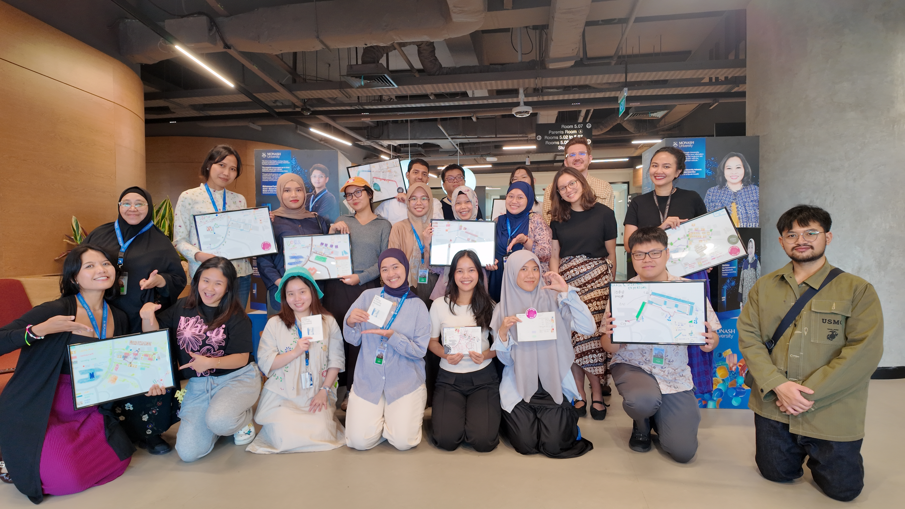
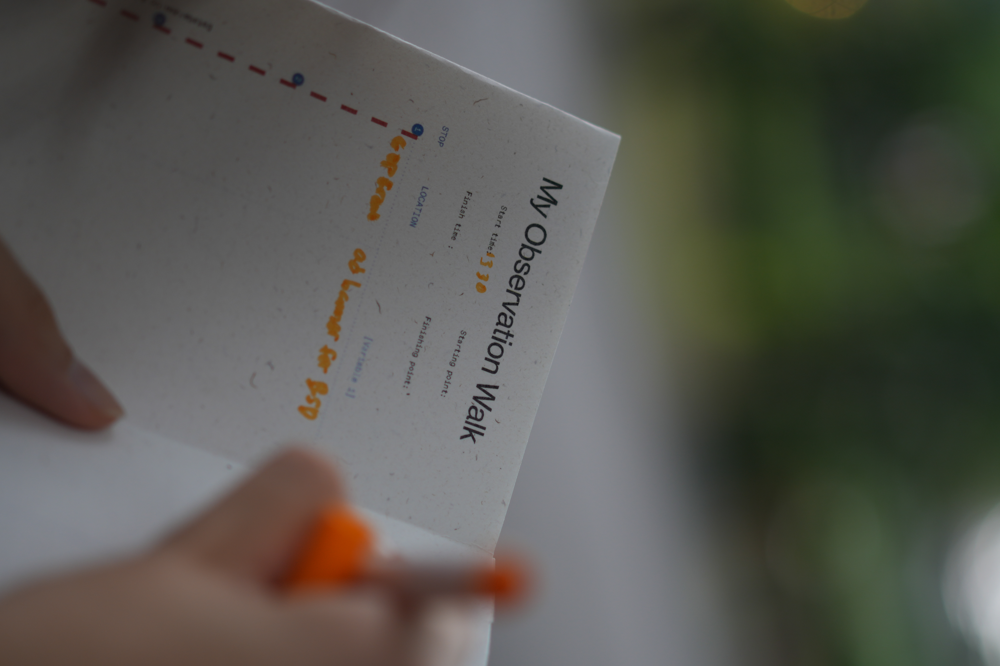
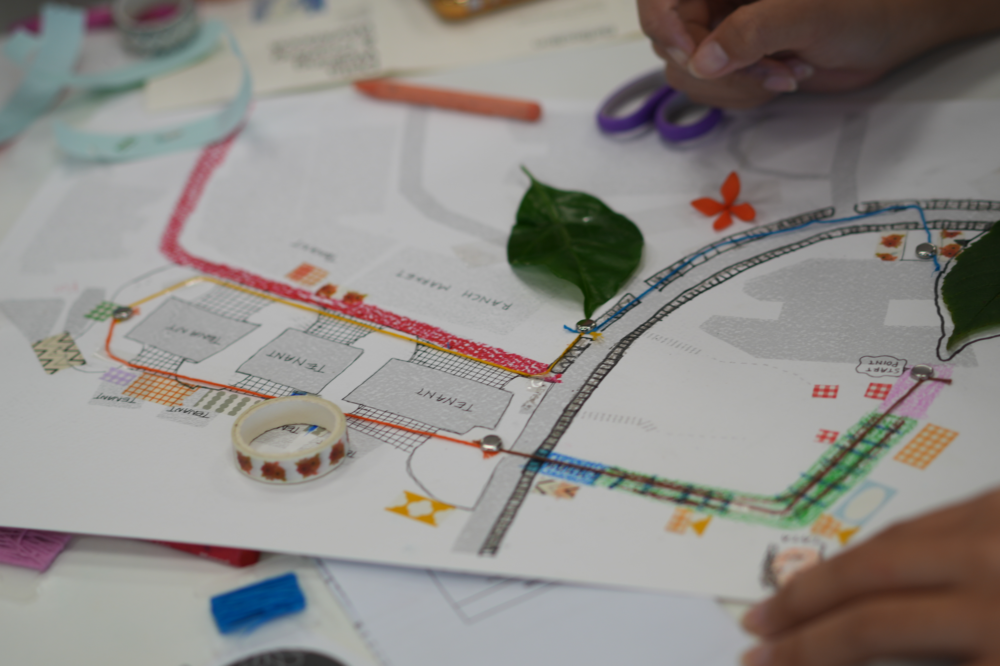
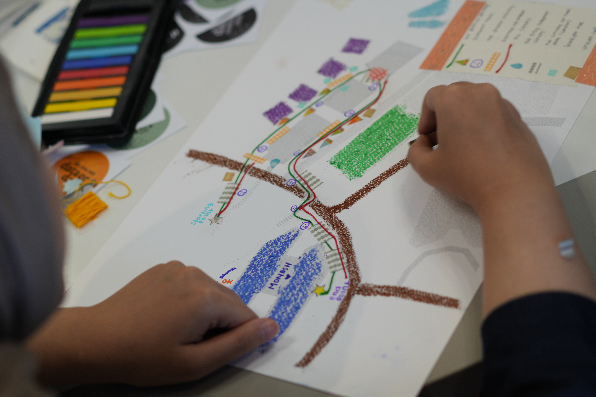

Abstract
This article reflects on Data Walking and Crafting, a workshop held in April 2026 at a university campus in Greater Jakarta, co-facilitated with a data-crafting collective. Drawing on psychogeography and the dérive, the workshop asked Master's students from data science, public health, marketing, and urban design to record observations of walkability and visual signage along a set trail through a privately owned mixed-use complex, before translating their notes into hand-crafted maps using paper, thread, and colour. The piece argues that the workshop's value lay less in the recorded observations than in the frictions the method exposed: the instability of the line between "variable" and "observation", the improvisation required of participants more fluent in quantitative than qualitative data, and the idiosyncratic visual languages each group developed to encode what they had seen. Read against the blueprint of the complex itself, these hand-drawn maps constitute a kind of counter-archive — partial, subjective, and produced through bodies moving through space in everyday scenarios, rather than through the plans that space was built from. The article situates this practice within a broader argument about what it means to "let loose" as an educator of data visualisation, and about walking as a method suited to environments that data pedagogy, in its usual screen-based form, tends not to reach.
Keywords
A Study of the Overlooked in Everyday Spaces
The Breeze, at Bumi Serpong Damai (BSD) Sinarmas Land, is where most of Monash Indonesia's students eat lunch. It is the kind of complex that does not ask to be looked at closely — a mixed-use retail strip, landscaped but privately managed, threaded with covered walkways that stop covering you exactly where you'd most like them to continue. Students pass through it several times a day without registering the tree roots breaking up the paving, or the uncovered drain by the second crossing, or the fact that the signage telling you where you are sits noticeably higher than the signage trying to sell you something. On 30 April 2026, eighteen Master's students (see Figure 1) — from data science, public health, marketing and digital communications, and urban design — were asked to notice these things on purpose, write them down, and then, later that afternoon, turn what they'd noticed into something made by hand: a paper collage, a thread map, a set of pencil marks that only their own group could fully read back.

We ran the workshop together — Arran Ridley and Joanne Amarisa, with Mei Leong of Data Garden Co. Amarisa and Leong’s repertoire of data-crafting practice — embroidery, felt, bracelets — comes from years of running community workshops that encode data into material form, documented most fully in their case study on a data-embroidery workshop held at MPavilion, Melbourne, where participants translated field observations of park trees into stitched and beaded encodings (Amarisa and Leong, 2024). Ridley's contribution came from an earlier, solo iteration of data walking developed and written about previously (Ridley, 2025). Putting the two practices together produced something neither had run before: half data walking, half data crafting, with the walk generating the raw material that the crafting stage would then have to find a form for. A fuller institutional account of the day is available as a companion piece (Monash University Indonesia, 2026).
Data Collection as Something You Do with Your Feet
There is a default in how data literacy gets taught, in communications programs especially, and it runs toward the quantitative — dashboards, structured datasets, clean variables with clear outputs. It is not a wrong place to start. But it treats data collection as something that happens at a desk, to a file, and it leaves the physical world — the world data is actually collected from — mostly out of the frame. Data Walking and Crafting started from the opposite end: the body, the street, the hand.
The data walking method borrows from psychogeography, the loose field of practice concerned with how environments shape emotion and behaviour, and specifically from the dérive — walking attentively, without a fixed agenda, letting the built and natural environment present itself rather than confirming an itinerary decided in advance (Debord, 1958). Guy Debord's dérive was developed for the Situationists' Paris, a very different city to walk through than a gated, privately managed complex on the outskirts of Jakarta. But the core proposition travels: that a place is not just its blueprint, and that the people who decide how a space looks, sounds, and feels are also, whether they intend to or not, deciding how humans are permitted to be in that space. Making that decision visible requires something other than a floor plan or a sensor. It requires someone walking through, registering friction.
This was not the first attempt at putting that proposition to work. In September 2025, at the DRAPAC25 gathering organised by EngageMedia, Ridley ran an earlier iteration of this method, ‘Tracing Data Trails’, which asked participants to trace surveillance infrastructure through a conference venue rather than a suburban campus (Ridley, 2025). That walk drew more directly on critical data studies — on Alison Powell's "data walkshop" as a means of surfacing everyday experiences of data from the bottom up, rather than from policy documents or system architecture (Powell, 2018), and on Karin van Es and Michiel de Lange's characterisation of datawalking as embodied, situated, and generative (Van Es and de Lange, 2020).
What that first walk produced was less a set of findings than a set of contradictions: CCTV read simultaneously as safety infrastructure and as a mechanism of control, glass-walled meeting rooms disciplining conduct without a camera in sight, and — most tellingly — the discovery that the only spatial "dead zone" free of fixed monitoring infrastructure was the bathroom, itself undercut by the fact that everyone's phone kept a continuous, passive log of their movement regardless. The BSD workshop inherited that same suspicion of clean boundaries — between public and private, visible and invisible, behaviour and design— even though what the students were tracing was walkability and signage rather than surveillance. In both cases, the walk's value came from what it made visible that a floor plan, a policy document, or a systems diagram would not.
Building a Trail Through Privately Owned Land
The practical work happened before anyone left the classroom. BSD Sinarmas Land is privately owned, which shapes what a "trail" through it can even mean — this is not public right-of-way in the way a European or American dérive might assume, and part of the pre-workshop planning was simply identifying a route that made sense to walk, that would take the right amount of time, and that offered enough variation in signage, vegetation, and surface to be worth recording. We settled on a loop through the campus and into the complex's retail precinct itself, and built a worksheet to structure — loosely — what participants would look for without overdetermining it.
Participants split into groups of two or three, choosing between two observation themes: walkability, auditing barriers and ease of movement through the campus paths, or visual communication, examining signage, messaging, and its intended audiences. Groups set off staggered, some clockwise and some counter-clockwise, partly so that the visible presence of eighteen students moving as one pack wouldn't itself become the thing being observed.
The cohort's disciplinary mix — data science, public health, marketing and digital communications, and urban design — was an incidental feature of enrolment rather than a deliberate sampling choice, though it visibly shaped what groups produced. The urban design group's final maps were noticeably more accomplished than the others', drawing on an existing fluency in technical and expressive drawing, and one participant's notes extended into a level of ecological detail — cataloguing variation in leaf texture across different tree species — that read as disciplinary habit rather than something the worksheet had asked for. We do not think this made their insights more valuable than anyone else's; groups across every discipline surfaced findings that surprised us in roughly equal measure. What differed was less the quality of observation than its idiom: each discipline seemed to notice through its own trained eye, even when working from the same brief.
Before anyone left the room, though, came the harder question, the one that ended up mattering more than any single finding: what counts as data here? Most participants were considerably more comfortable with structured, quantitative material than with the kind of thing you notice on a walk and aren't sure how to log.
In a pre-activity briefing, we suggested some predictable variables they could use to analyse each data point. For example, we prompted the visual communication groups to categorise signage according to its type (“Is it for wayfinding, advertising, or something else?”) and its height (“Is it eye-level, above, or below?”). For groups assessing walkability, we asked them to identify barriers and note what it is (“Is it a person, a vehicle, a construction sign, a traffic cone, a piece of nature such as a bush?”) and categorise the barrier by its permanency (“Is the object static and bolted in, or is it temporary, something incidental that could move or be moved?”). The variables were intended to prompt thinking and provide a basic scaffolding of how to categorise and encode found data. Groups were free to either use these variables or create their own. Every group was also asked to track a personal variable — their own subjective experience of the environment. Groups analysing signage were asked a yes/no question regarding personal relevance: “Is it relevant to you? Do you feel interested or influenced?” Meanwhile, groups in the walkability theme were asked to assess their level of discomfort or comfort at the given points: “How much does it obstruct you? Do you have to (a) go around the object, (b) get off the footpath, (c) stop and wait?” These variables were folded into the dataset as deliberately as anything measurable.
We had briefed that one person per group was to record a specific variable while others recorded more open observations (see Figure 2) — a distinction between "variable" and "observation" that, in practice, didn't hold. People weren't always sure which one they were doing. We let that ambiguity stand rather than correcting it, on the (untested, but we think correct) instinct that the discomfort of not knowing was closer to the point of the exercise than a tidier taxonomy would have been.

What Participants Found in a Place They Walk Through Daily
The walkability groups came back with a level of detail that surprised us. A group logged paths based on their surface quality, and specifically for how navigable they were in ordinary footwear — not hiking boots, but the heels and sandals people actually wear to class. Tree trunks pushing up through paving and uncovered drains were recorded as hazards, plainly, without needing much theoretical scaffolding. Rain cover was mapped across the loop and found to be uneven in ways nobody had consciously clocked before being asked to look — present in one stretch, absent a few metres later, for reasons that had nothing to do with where people might actually need it. One group, working entirely from qualitative impressions, built a composite "disability-friendliness" rating for different zones of the complex — a star score assembled out of observations that resisted easy quantification, which is itself an interesting move: an intuitive attempt to build an index without the tools an index normally requires.
That group's most striking finding wasn't a measurement at all. All the participants were visibly able-bodied. But in discussing the route, one group began speculating, in some detail, about how the same stretch of paving, the same signage, the same drainage would be experienced by someone with low mobility, someone who is Deaf or hard of hearing, someone who is blind or has low vision. None of this was verifiable from where they stood — it was predictive, not factual, offered by people without the relevant embodied knowledge to know for certain. But the act of trying to imagine it, prompted by nothing more than walking the same twenty minutes with a different question in mind, produced something closer to empathy than any lecture on accessibility design would have. Whether that counts as data is, itself, an interesting question — one the workshop didn't resolve and wasn't trying to.
The visual communication groups built, in effect, a working typology of signage by function and placement. Advertising — anything trying to intercept a customer's attention — sat consistently at eye level. Identity signage, building names and the like, tended to sit above it. The logic tracked cleanly once you noticed it: advertising has to catch you, identity signage only has to orient you, and the two don't compete for the same sightline. Given the precinct attracts a diverse workforce, groups also noted which languages appeared on which categories of sign, and the audience assumptions those choices quietly encode — who a sign expects to be reading it, and in what language it expects them to be thinking.
The Secret, and Beauty, of Encoding the Everyday
The crafting stage is where the workshop's real argument surfaced, though not in the form anyone had planned for. Back in the classroom, groups were first asked simply to map their walking route, and only then to encode their variables however made sense to them — thread, marker, washi tape, pencil, colour, paper collage (see Figures 3 and 4). What came back was genuinely varied: each group built its own visual grammar, legible to itself, opaque to everyone outside it. One participant described the process as being like developing a secret code — the kind that might pass between a mother and a child. Watching us, the facilitators, struggle to read their encoding back was, for that group, part of the pleasure. It's a small moment, but it says something real about how data visualisation actually works: encoding always assumes an audience, and legibility is never automatic. You cannot build a shared visual language without deciding, consciously or not, who it's for.


What participants found harder was pushing the output of the crafting past the conventional. We'd shown examples of abstract, unconventional cartography beforehand — hoping to nudge people away from simply drawing a nicer version of a street map — but most groups gravitated back toward recognisable forms. Material and time constraints likely played a role; two and a half hours does not leave much room for invention once the walking, the debriefing, and the actual crafting are all accounted for. Where the workshop succeeded was in the collecting and interpreting end of the process, where participants clearly felt licensed to be creative. The translation into finished visual form was the part still tethered to convention.
The Map as Blueprint, the Crafting as Counter-Archive
There is a version of this workshop that reads as a nice campus activity and stops there. What makes it worth writing about, we think, is what it does to the relationship between a place's blueprint and the accounts people produce by moving through it. The surrounding complex has an official plan — zoned, leased, designed by people who decided, deliberately or as a by-product of other decisions, where the shade would fall and where the advertising would sit. What the workshop produced instead — hand-drawn, imperfectly encoded, held together by tape and thread — sits outside that plan's authority. Call it a counter-archive: not more accurate than the blueprint, but accountable to a different kind of evidence, produced by bodies rather than surveyors (for a related argument, see Krygier and Wood, 2024). What it resists, specifically, is the presumption — shared by the complex's official plan and by the conventions of data science alike — that a space has only one legitimate account: the surveyed, quantified, and centrally authored one, against which an embodied, provisional, and multiply-authored record has no standing. Michel de Certeau's distinction between the totalising view of the map and the improvised, tactical movement of the walker below it is the obvious reference point here, and we don't think it's an accidental fit (de Certeau, 1984). Walking a space and drawing what you found is, among other things, a way of reclaiming some authorship over how that space gets described.
This resistance can be sharpened through Henri Lefebvre's triad of conceived, perceived, and lived space (Lefebvre, 1991), and Edward Soja's related firstspace–secondspace–thirdspace model (Soja, 1996): the blueprint as secondspace, the walked and measured environment as firstspace, and the crafted maps as an attempt at thirdspace — a lived account that combines and exceeds both.
The workshop also functioned, for us as facilitators, as a lesson in restraint. Teaching data visualisation tends toward the prescriptive — introduce the method cleanly, minimise room for error, produce outcomes that look like what we, the people running the session, would have produced ourselves. That approach leaves little space for trial, for productive confusion, for the kind of self-directed learning that only happens when the instructions are looser than feels comfortable. Letting the variable/observation distinction blur rather than correcting it in real time was a small but deliberate instance of that restraint. Participants still produced insight from imperfect, inconsistently recorded data — helped, admittedly, by the fact that most were already tertiary-level researchers accustomed to some ambiguity. Much of the context behind their worksheets was never written down at all; it surfaced afterward, verbally, in the presentation of findings. Data education, on this evidence, has to make room for exactly that kind of loss — for missing data, uncertain variables, and surroundings that resist clean measurement — rather than designing it out from the start.
Where This Leaves Us
Participants left saying the workshop had changed how they'd move through their own campus, now noticing lighting, signage, and surface on a walk to lunch that used to pass unremarked. That re-calibration of attention, more than the accuracy of any single finding, is the point of data walking as a method — and the disciplinary mix mattered here, since a public health researcher, a marketer, and an urban designer do not miss the same things, which is presumably why this cohort produced findings none of us, working alone, would have arrived at. What stays with us is the shape of the method itself: precise enough to generate something you can call data, loose enough to let people get it wrong, and dependent, at every stage, on a body actually being present in a place.
The most immediate change for future iterations is one of scale: running the workshop across half a day or a full day rather than two and a half hours, and replacing individual group maps with a single collaborative one, so a shared visual language gets negotiated in the room rather than built in isolation and decoded by us afterward. We are cautious, though, about framing any of this as a formal test of generalizability or replicability — the method has already looked different every time it has been run, from surveillance infrastructure at a conference venue to walkability and signage on a campus, and we think of these less as variations on a fixed protocol than an evolving practice that reshapes itself around whatever site and cohort it meets: a re-wilding, if that's the word for it, of a methodology data education usually keeps tightly fenced.
Acknowledgements
The authors would like to acknowledge Celeste Mei Leong and her essential contributions to this workshop, including her extensive research into the history of psychogeography – supported by a State Library Victoria Fellowship conducted in partnership with Joanne Amarisa – which added to the theoretical foundations behind our workshop design. Ms Leong also played a key role in designing our workshop activity by brainstorming data variables and planning site-specific prompts to the BSD Sinarmas Land context.
References
Amarisa, J. and Leong, M. (2024) 'Visualising nature through data embroidery: A hands-on workshop', Data Garden Co. Available at: https://www.data-garden.co/case-study-25 (Accessed: 1 July 2026).
de Certeau, M. (1984) The Practice of Everyday Life. Translated by S. Rendall. Berkeley: University of California Press.
Debord, G. (1958) 'Theory of the Dérive', Internationale Situationniste, 2.
Krygier, J. and Wood, D. (2024) Making Maps: A Visual Guide to Map Design for GIS. 4th edn. New York: Guilford Press.
Lefebvre, H. (1991) Critique of Everyday Life, Volume 1. Translated by J. Moore. London: Verso. (Original work published 1947.)
Monash University Indonesia (2026) 'Data walking and crafting: A new approach to understanding data in the urban environment', Monash University Indonesia News, 1 May. Available at: https://www.monash.edu/indonesia/news/data-walking-and-crafting-a-new-approach-to-understanding-data-in-the-urban-environment (Accessed: 1 July 2026).
Powell, A. (2018) 'The data walkshop and radical bottom-up data knowledge', in Knox, H. and Nafus, D. (eds) Ethnography for a Data-Saturated World. Manchester: Manchester University Press, pp. 212–232.
Ridley, A. (2025) 'Tracing Data Trails', LinkedIn, 26 September. Available at: https://www.linkedin.com/pulse/tracing-data-trails-arran-ridley-phd-ndt6c (Accessed: 1 July 2026).
Soja, E.W. (1996) Thirdspace: Journeys to Los Angeles and Other Real-and-Imagined Places. Oxford: Blackwell.
Van Es, K. and de Lange, M. (2020) 'Data with its boots on the ground: Datawalking as research method', European Journal of Communication, 35(3), pp. 278–289.
Author Bios
Arran Ridley is Assistant Professor and Program Coordinator for the Master of Marketing and Digital Communications at Monash University Indonesia, and a member of SEADS (Southeast Asia Research Centre for Digital Tech and Society). His research spans digital methods, datafication in Southeast Asia, and creative methodologies. Outside of academia, he has worked with a Mekong-based NGO and produced data stories with outlets such as the Kontinentalist.
Joanne Amarisa is a designer and writer working across storytelling, data, and literacy. She is the founder of Data Garden Co, a collective of artists, educators, and creators who build educational resources and run programs that introduce diverse learners to data visualisation and creative coding through humanist methodologies. Her work has been awarded grants from the Blackbird Foundation, Processing Foundation, and State Library Victoria. She is currently a Master of Journalism student at Monash University.
Recommended Citation
Ridley, A. and Amarisa, J. (2026) ‘Data, by Foot: Walking, Crafting, and the Counter-Archive of a Suburban Jakarta Campus’, Everyday Life: International Journal of Public Culture, Art and Design, 1(1), pp. 1–13.
Article URL: https://articles.everydaylifejournal.uk/articles/practice-reviews/data-by-foot/
Copyright
© 2026 The Author(s). Published by Everyday Life: International Journal of Public Culture, Art and Design. This is an open-access article distributed under the terms of the Creative Commons Attribution-NonCommercial 4.0 International Licence (CC BY-NC 4.0), which permits non-commercial use, distribution and reproduction in any medium, provided the original work is properly cited. Everyday Life is an independent open-access journal with no submission or publication fees.